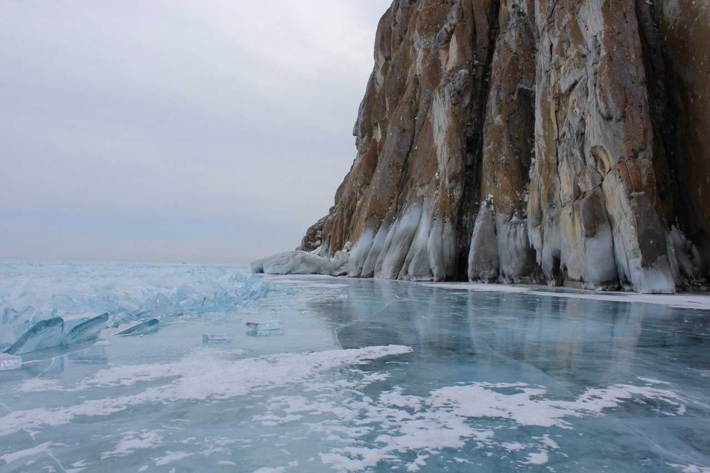

Идеи приключений

хранящий символы, оставленные древними племенами,
и просто очень красивое место. узнать больше
Утёс Саган-Заба
Памятник археологии на берегу Байкала,хранящий символы, оставленные древними племенами,
и просто очень красивое место. узнать больше

Архей
Это древний известняковый скальник, с вершиныкоторого открывается шикарный вид на озеро Байкал. узнать больше

Старая Ангасолка
это небольшой поселок-станция, расположенный на Кругобайкальской железнойдороге, являющейся уникальным памятником архитектуры и инженерного искусства ХIX-XX вв. узнать больше

Пикник на академгоре
Прямо в Иркутске в Академгородке есть лесной массив,который отлично подходит зимой для катания на лыжах,
летом для пробежек и велосипеда, и круглый год для прогулок. узнать больше